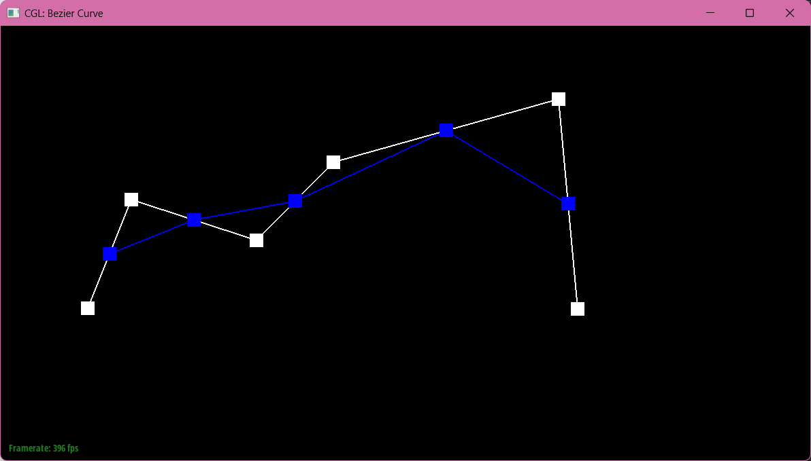

TODO
Casteljau's algorithm helps us interpolate a Bezier curve from given control points-we subdivide lines created by control points with ratio t to form the Bezier curve. For example, given three control points, we create two lines, both of which are subdivided using ratio 1 - t. The new line created by the points following is consequently subdivided as well, and the curve is formed by the two edge control points and our final interpolated control point.
We implemented this by creating a loop that iterates through every control point, minus the last point (which we can disregard in our loop as it's used to create an intermediate point in previous iteration). Within the loop, we define our ratio as 1 - t. Then, we create our intermediate point by multiplying Pi with our ratio and adding it to the following point Pi + 1 with t, which is then added to our return array of all calculated intermediate points.
|  | ||
The deCasteljau algorithm extends to bezier surfaces if we consider how meshes translate to 3D objects – as long as we can successfully connect one curve given its control points, we can connect all our curves with their own newly interpolated control points, providing structure in the opposite direction. In the polygons created by the intersecting curves, we can render our object in 3 dimensions.
We implemented this with three steps: the first is in evaluate, where we evaluate the Bezier patch at u and v. This means that we call evaluate1D on each vector of vectors of 3D points, or each vector within controlPoints, given ratio 1 - u. This will return a vector of 3D points, which we will use to call evaluate1D one last time given ratio 1 - v.
The second step is in evaluate1D, where we call evaluateStep (BezierPatch) on the given vector
The last step is in evaluateStep (BezierPatch), where given a vector of 3D points, we interpolate a single step of points calculated with ratio 1 - t, very similarly to how we interpolate it in evaluateStep (BezierCurve). The difference between this function and the previous is that we are now interpolating given 3D points, not 2D.
We implemented area-weighted vertex normals by first, finding all of the vertices and corresponding 3D points of triangle respective to our given halfedge. Secondly, we found the two edges by subtracting point 0 from point 1, and subtracting point 1 from point 2. Thirdly, we calculated the cross product of the two edges and normalizing it by squaring the x, y, and z values and finding the square root of their sum. Finally, we returned the normalized value multiplied by ½ and the cross product.
To implement the edge flip, we created pointers to every single value we could need in our flip, even if it didn't change. We made 10 halfedge values, 4 vertex values, 5 edge values (including given edge), and finally, two faces. These all point to the original values, before our flip. Now, in order to actually create the flip, we redrew the mesh and made sure only to change the values that needed to change. This would be our reference for reorganizing all our pointers. For each vertex, edge, and face, we set the corresponding halfedge. For each halfedge, we set all the corresponding neighbors. This works because we had our trusty diagram that gave us all the values we needed (as long as we drew it correctly!), so we just needed to take that leap of faith and set everything accordingly.
The most difficult part of this question was understanding how every value corresponded to each halfedge (e.g a vertex's halfedge is the one pointing away from it, not into it.) We only ran into one actual bug, which was a misplaced face's halfedge, which created holes in our mesh.
We implemented the edge split operation very similarly to edge flip, the most key difference is that we are creating new pointers. One thing that made this function easier to program, even if not conceptually easier, is that we don't need to delete pointers, just reassign, which is exactly what we do in edge split. The first step is the same, creating values that point to mesh's vertices, half/edges, and faces, but we also are now creating one new vertex, six new halfedges, three new edges, and two new faces. After creating our new pointers, we make sure to redraw our new edge split mesh, and reassign our values accurately and once again, take the leap of faith. Additionally, some simple math is done while reassigning our new vertex to make sure it sits exactly in the middle of the split edge.
By a small miracle, we didn't make any typos while reassigning pointers, although drawing the edge split diagram took FOREVER. We did, however, forget how to do basic algebra and made the vertex point inside the teapot at one point, which we corrected by changing the subtraction in the equation to addition (silliest typo ever).